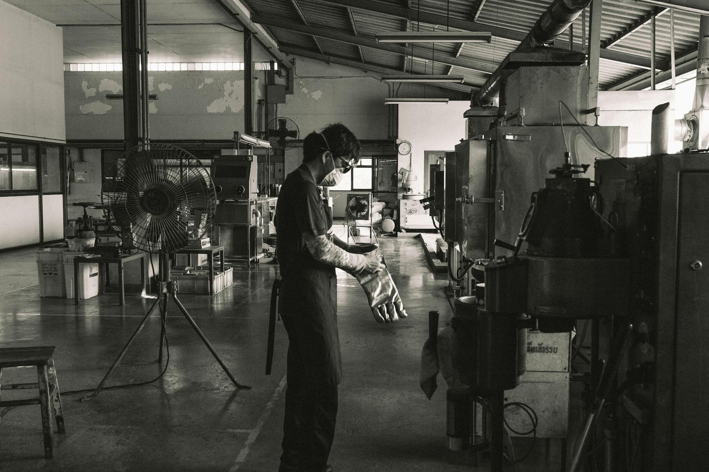
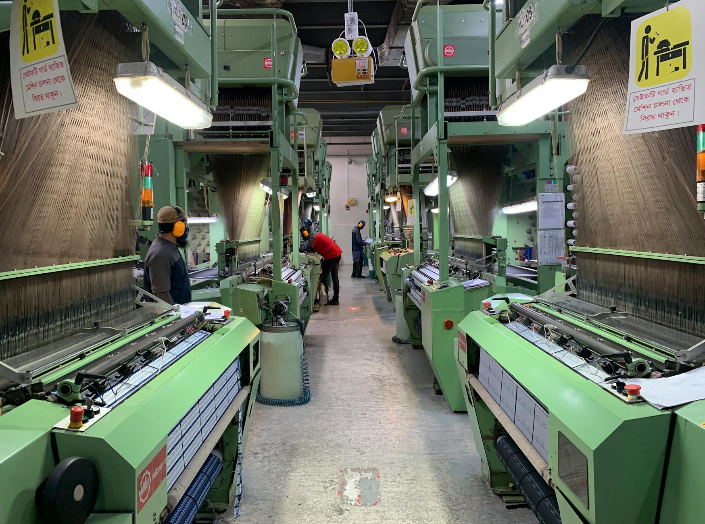
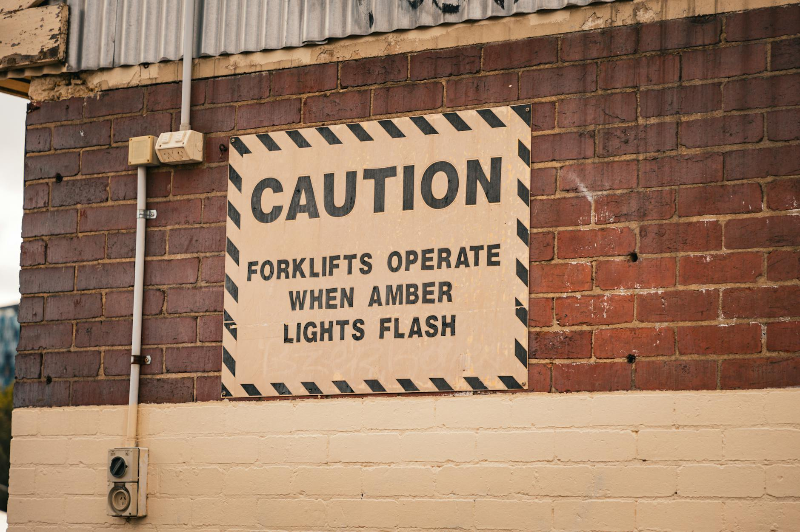
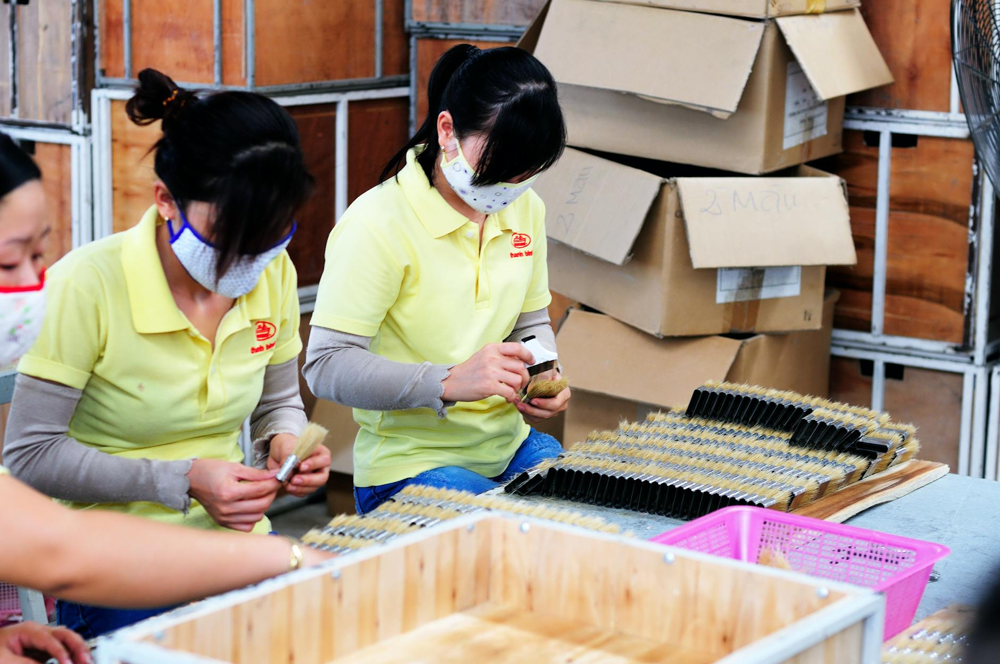
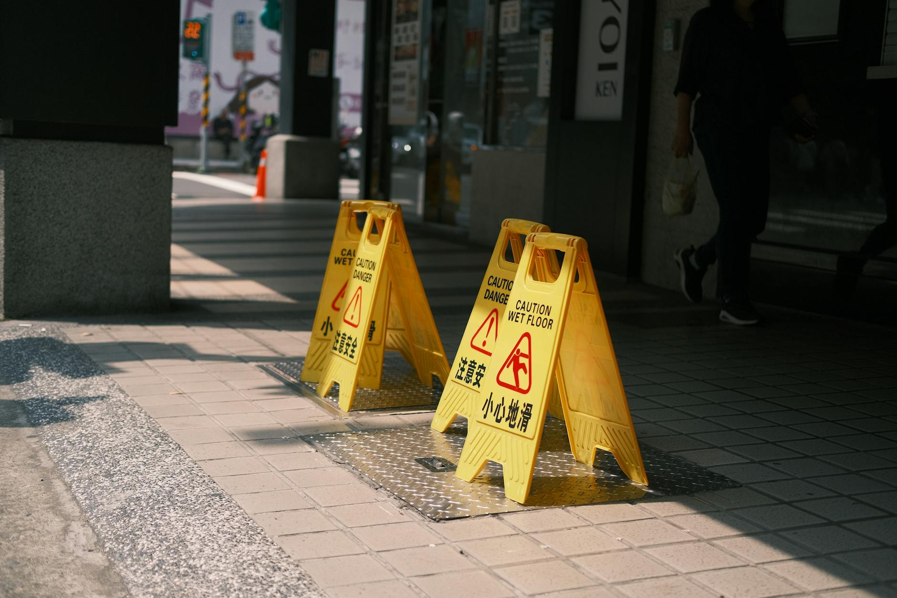
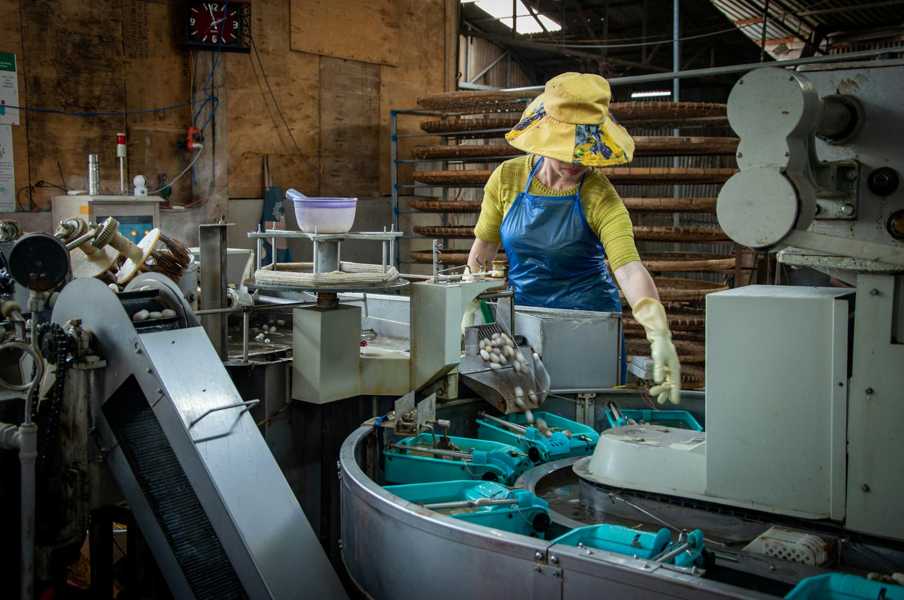

Hướng dẫn Mới nhất
Các bài viết chuyên sâu dành cho người nước ngoài làm việc tại Nhật Bản
Quy Định Về Móng Tay, Tóc và Vệ Sinh Cá Nhân Trong Nhà Máy Nhật Bản
Trong các nhà máy Nhật Bản, ngoại hình của bạn không chỉ là chuyện cá nhân — đó là một phần của công việc. Nắm rõ các quy định vệ sinh cá nhân ngay từ ngày đầu giúp bạn tránh bị nhắc nhở và hòa nhập nhanh hơn.
Đọc bài viết →
Những Câu Hỏi Quan Trọng Cần Hỏi Trước Khi Nhận Việc Làm Tại Nhà Máy Ở Nhật
Nhận được lời mời làm việc tại Nhật thật đáng mừng, nhưng đừng vội đồng ý. Trước khi ký hợp đồng hay xác nhận bất cứ điều gì, bạn cần đặt ra một số câu hỏi quan trọng với người tuyển dụng hoặc công ty phái cử.
Đọc bài viết →Kiến Thức Cơ Bản Về Kiểm Tra Chất Lượng: Công Việc Thường Gặp Của Lao Động Nước Ngoài Tại Nhà Máy Nhật
Kiểm tra chất lượng, hay 品質検査 (hinshitsu kensa), là một trong những công việc phổ biến nhất được giao cho lao động nước ngoài tại các nhà máy ở Nhật Bản. Hiểu rõ cần kiểm tra điều gì và cách báo cáo vấn đề đúng cách là yếu tố then chốt để làm việc hiệu quả và tránh những sai sót tốn kém.
Đọc bài viết →Quy định về giày bảo hộ trong các nhà máy Nhật Bản: Người lao động cần biết gì
Ở nhiều nhà máy Nhật Bản, giày bảo hộ không phải là lựa chọn tùy ý. Chúng giúp bảo vệ bàn chân khỏi trượt ngã, vật rơi, vật sắc nhọn và các nguy cơ khác, và mang sai loại giày có thể bị nhắc nhở hoặc yêu cầu về thay.
Đọc bài viết →Kiến Thức Cơ Bản về Kanban cho Lao Động Nước Ngoài trong Nhà Máy ở Nhật
Kanban là một trong những hệ thống quan trọng nhất trong nhà máy ở Nhật. Khi hiểu đúng, bạn sẽ giữ được dòng sản xuất trôi chảy và giảm lỗi đáng kể.
Đọc bài viết →
Quy định dùng điện thoại ở nhà máy Nhật: Người lao động cần biết gì
Ở nhiều nhà máy Nhật, quy định về điện thoại rất chặt. Điều này không nhằm làm khó người lao động mà để giữ an toàn, giữ trật tự và giúp dây chuyền chạy ổn định.
Đọc bài viết →
Cách Nghỉ Về Sớm Trong Các Nhà Máy Ở Nhật
Về sớm ở nhà máy Nhật là điều có thể, nhưng thường phải xin phép rõ ràng và làm đúng quy trình. Nếu xử lý không khéo, bạn có thể gây rối, mất niềm tin và phát sinh vấn đề chấm công.
Đọc bài viết →
Quy Tắc An Toàn Khi Làm Việc Gần Xe Nâng Trong Nhà Máy Nhật Bản
Xe nâng là một trong những nguyên nhân hàng đầu gây tai nạn nghiêm trọng tại các nhà máy Nhật Bản. Hiểu rõ đường đi của chúng và cách để người lái nhìn thấy bạn có thể cứu sống bạn.
Đọc bài viết →Cách xin đổi ca làm trong một nhà máy ở Nhật
Nếu bạn cần đổi ca trong nhà máy ở Nhật, điều quan trọng là báo sớm, nói lịch sự và đưa ra lý do rõ ràng. Chỉ cần làm đúng quy trình và gặp đúng người, yêu cầu của bạn sẽ dễ được chấp nhận hơn.
Đọc bài viết →Những Điều Cần Biết Về Thời Gian Đào Tạo Tại Nhà Máy Nhật Bản
Vài tuần đầu tại nhà máy Nhật Bản có thể rất choáng ngợp, nhưng biết trước những gì sẽ xảy ra sẽ tạo ra sự khác biệt lớn. Thời gian đào tạo được tổ chức chặt chẽ, lặp đi lặp lại và rất chú trọng chi tiết — và đó là điều có chủ đích.
Đọc bài viết →Quy Tắc Cửa Thoát Hiểm Mà Mọi Công Nhân Nhà Máy Tại Nhật Bản Cần Biết
Trong một nhà máy ở Nhật Bản, biết vị trí các lối thoát hiểm — và cách sử dụng chúng đúng cách — có thể cứu sống bạn. Đây không chỉ là hướng dẫn; chúng được luật pháp quy định và được người sử dụng lao động thực thi nghiêm túc.
Đọc bài viết →
Những khoản khấu trừ lương mà lao động nhà máy nước ngoài ở Nhật nên hỏi rõ
Khi nhận phiếu lương đầu tiên ở một nhà máy tại Nhật, số tiền thực lĩnh có thể thấp hơn bạn nghĩ. Điều đó chưa chắc là sai, nhưng bạn cần kiểm tra từng khoản khấu trừ thật kỹ.
Đọc bài viết →Cách kiểm tra xem lương nhà máy của bạn có bị thiếu khoản nào không
Nếu tiền lương nhà máy của bạn thấp hơn dự kiến, đừng đoán mò. Hãy kiểm tra bảng lương từng bước để phát hiện sớm tiền tăng ca, phụ cấp hoặc khoản khấu trừ sai.
Đọc bài viết →Hōrenso: Quy Tắc Báo Cáo, Liên Lạc và Tham Khảo tại Nhà Máy Nhật Bản
Tại nơi làm việc ở Nhật Bản, có một nguyên tắc vàng gọi là hōrenso. Đây là ba thói quen giao tiếp mà mọi công nhân đều phải thực hiện—và nếu bỏ qua bất kỳ điều nào, bạn có thể ảnh hưởng nghiêm trọng đến uy tín của mình tại nơi làm việc.
Đọc bài viết →Cách báo ốm đúng cách cho nhà máy Nhật hoặc công ty phái cử
Khi bạn không thể đi làm vì bị ốm, cách báo tin rất quan trọng. Ở nhà máy hoặc công ty phái cử tại Nhật, một tin nhắn ngắn gọn và rõ ràng sẽ giúp ca làm không bị xáo trộn quá nhiều.
Đọc bài viết →
Cách hiểu các màu biển báo an toàn thường gặp trong nhà máy Nhật Bản
Trong nhà máy Nhật Bản, biển báo an toàn dùng màu sắc để truyền thông điệp rất nhanh. Hiểu đúng ý nghĩa từng màu sẽ giúp bạn nhận ra nguy hiểm sớm hơn, làm đúng quy định và tránh sai sót trên dây chuyền.
Đọc bài viết →Cách Báo Vấn Đề Rõ Ràng Và Hiệu Quả Trong Nhà Máy Nhật
Khi có sự cố trong nhà máy Nhật, báo ngay và nói rõ ràng sẽ giúp tránh rắc rối lớn hơn, giữ an toàn và để công việc không bị chậm lại.
Đọc bài viết →
Cách xác nhận chỉ dẫn để không hiểu sai công việc trong nhà máy
Trong công việc nhà máy, chỉ một hiểu nhầm nhỏ cũng có thể dẫn đến sai sót, chậm tiến độ hoặc rủi ro an toàn. Vì vậy, hãy xác nhận chỉ dẫn trước khi làm, nhất là khi nhiệm vụ mới hoặc được nói rất nhanh.
Đọc bài viết →Cách hỏi xin giúp đỡ lịch sự trong một nhà máy ở Nhật
Trong nhà máy ở Nhật, hỏi xin giúp đỡ là chuyện bình thường. Điều quan trọng là nói sớm, dùng lời lịch sự và nói rõ bạn đang cần gì.
Đọc bài viết →Cách công nhân nhà máy nước ngoài xây dựng niềm tin nơi làm việc Nhật Bản
Ở nhà máy Nhật, niềm tin không chỉ đến từ tay nghề. Người ta còn nhìn vào sự đáng tin, cách bạn giao tiếp và những thói quen nhỏ bạn lặp lại mỗi ngày.
Đọc bài viết →Ứng Xử Trong Phòng Nghỉ Chung Ở Các Nhà Máy Nhật Bản
Phòng nghỉ trong nhà máy là nơi để thư giãn, nhưng đó cũng là không gian chung nơi những thói quen nhỏ ảnh hưởng đến mọi người. Hiểu đúng phép tắc sẽ giúp bạn tránh rắc rối, giữ không gian thoải mái và thể hiện sự tôn trọng với đồng nghiệp.
Đọc bài viết →Thời Gian Thử Việc Có Nghĩa Gì Trong Các Việc Làm Nhà Máy Ở Nhật
Thời gian thử việc là một phần rất phổ biến trong hợp đồng làm nhà máy ở Nhật. Đây không chỉ là thủ tục: cả công ty lẫn người lao động đều dùng giai đoạn này để xem công việc, giờ giấc, tốc độ và thái độ có phù hợp hay không.
Đọc bài viết →
Cách đọc hướng dẫn công việc và phiếu quy trình trong nhà máy Nhật
Hướng dẫn công việc và phiếu quy trình cho bạn biết phải làm gì, nhưng lúc đầu chúng rất dễ rối. Khi hiểu bố cục, từ khóa và phần cảnh báo, bạn sẽ làm nhanh hơn và tránh sai sót.
Đọc bài viết →
Cách báo lỗi hoặc báo bất thường trên chuyền sản xuất
Khi thấy lỗi hoặc điều gì bất thường trên chuyền sản xuất, hãy báo ngay. Báo sớm và rõ ràng sẽ giúp tránh phế phẩm, dừng chuyền và tai nạn.
Đọc bài viết →
Phải làm gì nếu bạn sẽ đến muộn ở nhà máy Nhật Bản
Nếu bạn sắp đến muộn ca làm ở nhà máy Nhật Bản, cách báo tin rất quan trọng. Hãy liên hệ càng sớm càng tốt, nói rõ lý do và thời gian dự kiến đến nơi. Bài viết này giải thích nên báo cho ai, nên nói gì và làm sao để tránh lặp lại vấn đề.
Đọc bài viết →
Những Sai Lầm Phổ Biến Của Lao Động Nước Ngoài Mới Trong Nhà Máy Nhật Bản
Khi mới vào làm ở nhà máy Nhật Bản, bạn phải học cùng lúc công việc, lịch làm, quy tắc an toàn và cách ứng xử. Sai sót lúc đầu là chuyện rất dễ xảy ra, nhưng phần lớn đều có thể tránh nếu bạn biết điều cần để ý.
Đọc bài viết →
Ứng phó Động đất Cơ bản cho Công nhân Nhà máy ở Nhật Bản
Động đất có thể xảy ra bất ngờ ở Nhật Bản, nên công nhân nhà máy cần biết rõ phải làm gì. Ứng phó đúng giúp giảm chấn thương, bớt hoảng loạn và sơ tán an toàn hơn.
Đọc bài viết →
Danh Sách Việc Cần Chuẩn Bị Cho Ngày Đầu Tiên Khi Làm Ở Một Nhà Máy Nhật Bản
Ngày đầu tiên ở một nhà máy Nhật Bản có thể khiến bạn khá choáng ngợp, nhất là khi bạn mới đi làm hoặc mới đến Nhật. Một checklist đơn giản sẽ giúp bạn chuẩn bị tốt, tạo ấn tượng đầu tiên tích cực và tránh những sai sót ảnh hưởng đến an toàn hoặc việc chấm công.
Đọc bài viết →
Cần làm gì khi thẻ chấm công ở xưởng tại Nhật bị sai
Nếu thẻ chấm công của bạn bị sai, đừng bỏ qua. Một lỗi nhỏ cũng có thể ảnh hưởng đến lương, tăng ca và hồ sơ chuyên cần. Điều quan trọng là kiểm tra sớm, báo rõ ràng và giữ bằng chứng về giờ làm thực tế.
Đọc bài viết →
Cách báo nghỉ làm ở một nhà máy Nhật Bản
Khi bạn không thể đi làm ở một nhà máy Nhật Bản, việc báo nghỉ sớm và rõ ràng là rất quan trọng. Điều này giúp đội ngũ sắp xếp ca làm và cho thấy bạn làm việc có trách nhiệm.
Đọc bài viết →
Quy Dinh Diem Danh trong Nha May Nhat Ban
Diem danh la mot trong nhung quy dinh quan trong nhat trong nha may Nhat Ban. Bai viet nay giai thich cach xu ly cham cong, di tre, va nghi phep.
Đọc bài viết →
Họp Sáng (Chōrei) trong Nhà Máy Nhật: Những Điều Bạn Cần Biết Mỗi Ngày
Chōrei là gì, điều gì xảy ra trong đó, kéo dài bao lâu và cách tham gia đúng cách với tư cách là công nhân nước ngoài — mỗi ca làm việc.
Đọc bài viết →
Bảo Hiểm Xã Hội (Shakai Hoken) cho Công Nhân Nhà Máy Nhật: Hướng Dẫn Đơn Giản
Shakai hoken bao gồm gì, bao nhiêu bị khấu trừ, cách sử dụng thẻ bảo hiểm y tế và cách lấy lại tiền lương hưu khi rời Nhật Bản.
Đọc bài viết →
Quy Tắc Giờ Nghỉ Trưa và Giờ Nghỉ tại Nhà Máy Nhật Bản
Tất cả những gì bạn cần biết về hiruyasumi, nơi ăn uống, nghi thức phòng nghỉ và các quy tắc hay khiến người lao động nước ngoài bất ngờ.
Đọc bài viết →
Sống Trong Ký Túc Xá Nhà Máy Nhật Bản (寮): Nội Quy, Chi Phí và Những Điều Cần Biết
Tất cả những điều bạn cần biết về ký túc xá công ty — chi phí, nội quy, mâu thuẫn phòng ở và cách bảo vệ tiền đặt cọc.
Đọc bài viết →
5S Trong Nhà Máy Nhật Bản: Là Gì và Cách Thực Hiện Với Tư Cách Người Lao Động Nước Ngoài
Seiri, seiton, seisō, seiketsu, shitsuke — tìm hiểu 5S có nghĩa gì, tại sao được coi trọng và nhiệm vụ hàng ngày của bạn trên sàn nhà máy.
Đọc bài viết →
Thực Tập Sinh Kỹ Năng vs Lao Động Kỹ Năng Đặc Định Nhật Bản: Khác Nhau Như Thế Nào?
So sánh rõ ràng TITP và SSW — quyền lợi, thời hạn, thay đổi chủ lao động và lộ trình nào tốt hơn cho công nhân nhà máy.
Đọc bài viết →
Ngày Lễ Quốc Gia Nhật Bản và Ảnh Hưởng Đến Lịch Làm Việc Nhà Máy Của Bạn
16 ngày lễ quốc gia, Golden Week, Obon, nghỉ Tết — và ý nghĩa của chúng đối với lương, kế hoạch du lịch và giấy tờ của bạn.
Đọc bài viết →
Trợ Cấp Đi Lại Tại Nhà Máy Nhật Bản: Bạn Được Nhận Gì và Cách Nó Hoạt Động
Giới hạn miễn thuế, hoàn trả vé đi lại, quy định xe buýt công ty và việc phải làm khi chuyển địa chỉ.
Đọc bài viết →
Khám Sức Khỏe Hàng Năm Tại Nhà Máy Nhật Bản: Những Điều Người Lao Động Nước Ngoài Cần Biết
定期健康診断 kiểm tra những gì, có bắt buộc không, cách đọc kết quả và quyền riêng tư y tế của bạn.
Đọc bài viết →
Điều Gì Xảy Ra Nếu Bạn Nghỉ Việc Ở Nhà Máy Nhật Bản Trước Khi Hết Hợp Đồng?
Quyền pháp lý nghỉ việc, điều gì xảy ra với nhà ở và visa, quyền lợi lương cuối và cách nghỉ đúng cách bằng văn bản.
Đọc bài viết →
Số và Đơn Vị Tiếng Nhật Dành Cho Công Nhân Nhà Máy: Bảng Tham Khảo Thực Tế
Số cơ bản, đơn vị đếm (個/本/枚/台), đơn vị đo lường trong tiếng Nhật, nhiệt độ, thời gian và từ vựng tỷ lệ lỗi cho sàn nhà máy.
Đọc bài viết →
Nghỉ Phép Có Lương (有給休暇) Tại Nhà Máy Nhật Bản: Hướng Dẫn Dành Cho Người Lao Động Nước Ngoài
Số ngày được cấp, quy tắc bắt buộc 5 ngày, cách xin nghỉ và điều gì xảy ra với ngày nghỉ chưa dùng khi thôi việc.
Đọc bài viết →
Tăng Lương và Thưởng Tại Nhà Máy Nhật Bản: Những Điều Người Lao Động Nước Ngoài Cần Biết
Cách đánh giá jinji kōka hoạt động, lịch thưởng hai lần mỗi năm và sự khác biệt của lao động phái cử.
Đọc bài viết →
Làm Thêm Giờ ở Nhà Máy Nhật Bản: Quy Tắc, Lương và Quyền Lợi Của Bạn
Tìm hiểu giới hạn pháp lý về làm thêm giờ, cách tính mức lương, ý nghĩa của thỏa thuận 36-kyōtei và cách nhận biết làm thêm giờ bất hợp pháp không trả lương.
Đọc bài viết →
Phải Làm Gì Khi Bị Tai Nạn Lao Động Ở Nhà Máy Nhật Bản (Hướng Dẫn Rōsai)
Bị thương tại nơi làm việc? Tìm hiểu cách báo cáo tai nạn, yêu cầu bồi thường rōsai và bảo vệ quyền lợi của bạn với tư cách người lao động nước ngoài tại Nhật Bản.
Đọc bài viết →
Làm Ca Đêm tại Nhà Máy Nhật Bản: Những Điều Người Lao Động Nước Ngoài Cần Biết
Tất cả những gì bạn cần để sống sót và thành công khi làm ca đêm — từ phụ cấp ca đêm đến mẹo giữ sức khỏe và nhịp sinh học.
Đọc bài viết →
Haken và Tuyển Dụng Trực Tiếp: Điều Người Lao Động Nước Ngoài Tại Nhà Máy Cần Biết
Bối rối về loại hợp đồng của bạn? Tìm hiểu sự khác biệt chính giữa haken (phái cử) và tuyển dụng trực tiếp tại các nhà máy Nhật Bản.
Đọc bài viết →
Những Câu Tiếng Nhật Cần Thiết cho Công Nhân Nhà Máy: 50 Từ Bạn Phải Biết
Những từ và câu tiếng Nhật quan trọng nhất cho sàn nhà máy — lời chào, thuật ngữ an toàn, hướng dẫn và các cách diễn đạt khẩn cấp.
Đọc bài viết →Văn hóa Nhà máy Nhật Bản: Những điều Mỗi Công nhân Nước ngoài Phải Biết
Khám phá sâu về các quy tắc bất thành văn, tư duy tập thể và phong tục hàng ngày định hình cuộc sống bên trong nhà máy Nhật Bản.
Bài viết — sắp ra mắtCác Quy tắc Bất thành văn của Nhà máy Nhật Bản
Những kỳ vọng không nói ra mà mọi công nhân nước ngoài đều học theo cách khó khăn.
Bài viết — sắp ra mắtCách Đọc Phiếu Lương Nhà máy Nhật Bản của Bạn
Bối rối với phiếu lương? Tìm hiểu từng dòng — từ lương cơ bản đến làm thêm giờ và các khoản khấu trừ.
Bài viết — sắp ra mắt